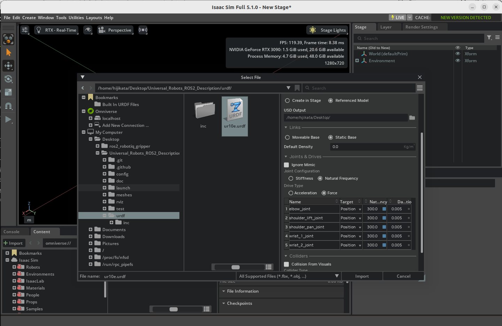
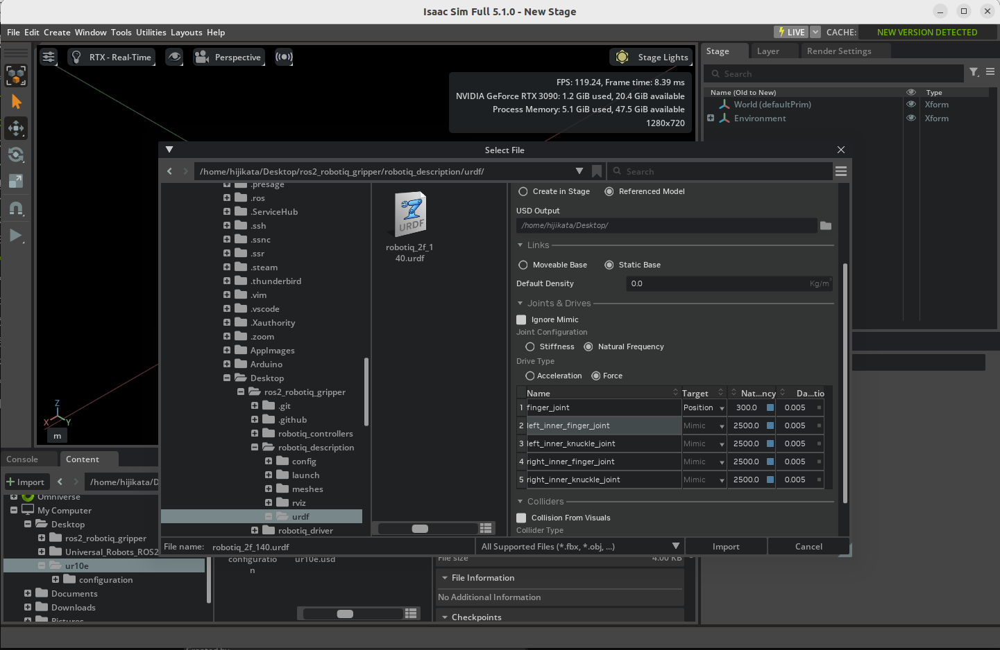
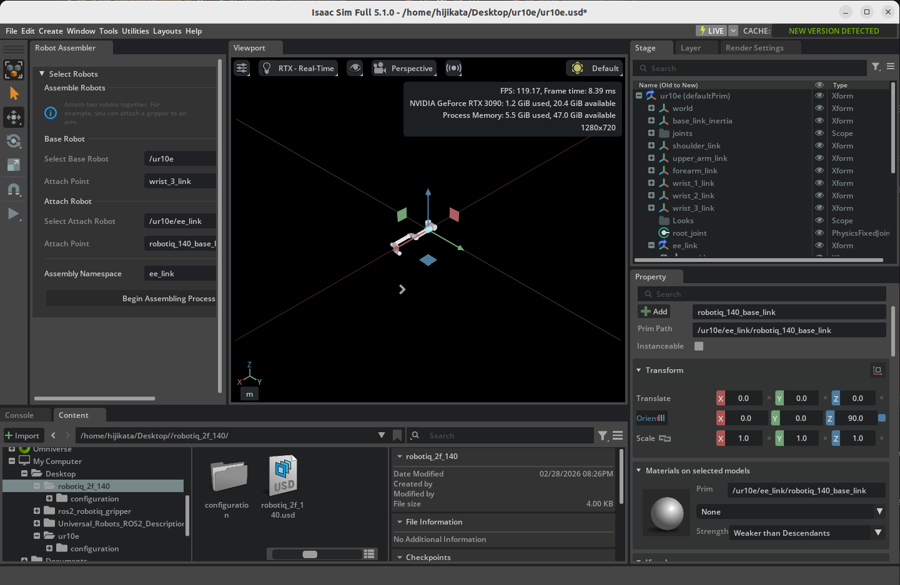
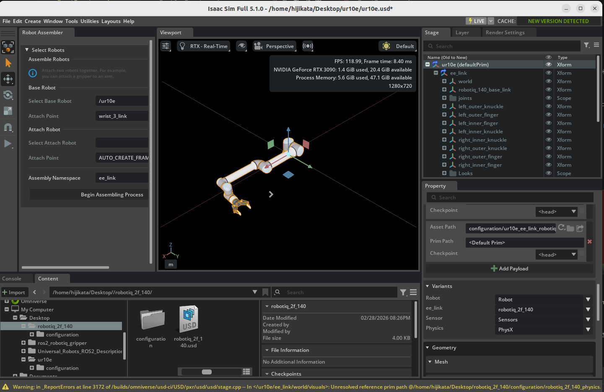

マニピュレータのセットアップ¶
学習目標¶
このチュートリアルを修了すると、以下の内容を習得できます：
- URDF ファイルから UR10e ロボットアームをインポートする方法
- URDF ファイルから Robotiq 2F-140 グリッパーをインポートする方法
- GUI 操作でロボットアームとグリッパーを手動接続する方法
- Robot Assembler を使って自動接続する方法
はじめに¶
前提条件¶
- チュートリアル 5: モバイルロボットのリギング を完了していること
- Python 3 と
pipが使える環境（xacroパッケージのインストールに使用） gitがインストールされていること
所要時間¶
約 30 分
概要¶
このチュートリアルでは、UR10e ロボットアームと Robotiq 2F-140 グリッパーを URDF ファイルからインポートし、単一のアーティキュレーションとして接続します。接続方法として、GUI による手動接続と Robot Assembler を使った自動接続の2つの方法を学びます。
URDF インポートの2つの方法¶
Isaac Sim には URDF をインポートする方法が2つあります：
| 方法 | エクステンション名 | ROS 2 が必要か | 説明 |
|---|---|---|---|
| Direct URDF Importer | isaacsim.asset.importer.urdf |
不要 | URDF ファイルを直接指定してインポート |
| ROS 2 URDF Importer | isaacsim.ros2.urdf |
必要 | ROS 2 ノードから URDF を取得してインポート |
このチュートリアルでは、ROS 2 が不要な Direct URDF Importer を使用します。
ROS 2 URDF Importer を使いたい場合
ROS 2 環境がインストール済みの場合は、File > Import from ROS 2 URDF Node から ROS 2 ノード経由でインポートすることもできます。この場合、ros2 launch ur_description view_ur.launch.py ur_type:=ur10e で URDF をパブリッシュし、Isaac Sim 側でノード名 robot_state_publisher を指定して取得します。詳細は 公式ドキュメント を参照してください。
使用するアセット¶
Isaac Sim に同梱されているサンプルアセットを参考として使用できます。画面右下の Content タブから以下のパスでアクセスできます：
| アセット | パス | 用途 |
|---|---|---|
| import_manipulator フォルダ | Samples > Rigging > Manipulator > import_manipulator |
URDF ファイルや完成済み USD の参考用 |
| UR10e（完成済み） | import_manipulator/ur10e/ur/ur.usd |
UR10e の参考アセット |
| 手動接続版（完成済み） | import_manipulator/ur10e/ur/ur_gripper_manual.usd |
GUI 手動接続の完成例 |
| Robot Assembler 版（完成済み） | import_manipulator/ur10e/ur/ur_gripper.usd |
Robot Assembler 接続の完成例 |
Isaac Sim 同梱の URDF を使いたい場合
Isaac Sim のインストールディレクトリにも URDF ファイルが同梱されています。XACRO 変換の手順をスキップしたい場合は、以下のファイルを直接使用できます：
- UR10e URDF:
<Isaac Sim のインストール先>/exts/isaacsim.robot_motion.motion_generation/motion_policy_configs/universal_robots/ur10e/ur10e.urdf - UR10e + Robotiq 統合 URDF:
<Isaac Sim のインストール先>/standalone_examples/api/isaacsim.robot.manipulators/ur10e/rmpflow/ur10e.urdf（ロボットアームとグリッパーが接続済み）
ステップ 1：URDF ファイルの準備¶
このステップでは、UR10e ロボットアームと Robotiq 2F-140 グリッパーの XACRO ファイルを GitHub の ROS パッケージから取得し、Isaac Sim でインポート可能な URDF ファイルに変換します。
XACRO と URDF の関係
XACRO（XML Macro）は URDF を効率的に記述するためのマクロ言語です。パラメータ化やファイル分割ができるため、多くの ROS ロボットパッケージで採用されています。Isaac Sim の URDF Importer は XACRO を直接読み込めないため、事前に URDF に変換する必要があります。
1-1. xacro のインストール¶
XACRO から URDF への変換には xacro パッケージが必要です。ROS 2 がインストールされていない環境でも pip でインストールできます：
1-2. UR10e の URDF を生成¶
リポジトリのクローン¶
Universal Robots の公式 ROS 2 Description パッケージをクローンします：
git clone https://github.com/UniversalRobots/Universal_Robots_ROS2_Description.git
cd Universal_Robots_ROS2_Description
パスの書き換え¶
XACRO ファイル内の $(find ur_description) は ROS のパッケージ検索機能を使ったパス指定です。ROS 2 がインストールされていない環境では解決できないため、クローンしたリポジトリの絶対パスに置き換えます：
# $(find ur_description) をリポジトリの絶対パスに置き換え
sed -i "s|\$(find ur_description)|$(pwd)|g" urdf/ur.urdf.xacro urdf/ur_macro.xacro
$(find パッケージ名) とは
$(find パッケージ名) は ROS の XACRO で使われる構文で、指定した ROS パッケージのインストールパスに展開されます。ROS 環境外で XACRO を使う場合は、このように実際のパスに手動で置き換える必要があります。
XACRO から URDF への変換¶
メッシュパスの書き換え¶
生成された URDF ファイル内のメッシュパスは package://ur_description/... 形式になっています。Isaac Sim の URDF Importer が正しくメッシュを読み込めるよう、相対パスに変換します：
変換後、メッシュパスは以下のように相対パスになります：
<!-- 変換前 -->
<mesh filename="package://ur_description/meshes/ur10e/visual/base.dae"/>
<!-- 変換後 -->
<mesh filename="../meshes/ur10e/visual/base.dae"/>
変換結果の確認
urdf/ur10e.urdf が正しく生成されたか確認するには、以下のコマンドでメッシュパスをチェックします：
すべてのパスが ../meshes/ur10e/... で始まっていれば成功です。
1-3. Robotiq 2F-140 の URDF を生成¶
リポジトリのクローン¶
PickNikRobotics が提供する ROS 2 対応の Robotiq グリッパーパッケージをクローンします：
cd .. # Universal_Robots_ROS2_Description の親ディレクトリに戻る
git clone https://github.com/PickNikRobotics/ros2_robotiq_gripper.git
cd ros2_robotiq_gripper/robotiq_description
パスの書き換え¶
UR10e と同様に、$(find robotiq_description) をリポジトリの絶対パスに置き換えます：
sed -i "s|\$(find robotiq_description)|$(pwd)|g" urdf/robotiq_2f_140_gripper.urdf.xacro urdf/robotiq_2f_140_macro.urdf.xacro
XACRO から URDF への変換¶
include_ros2_control:=false を指定して、Isaac Simでは不要なROS 2 制御インターフェースの定義を省略します：
メッシュパスの書き換え¶
変換済み URDF の参考ファイル
パス変更が上手くいかない場合は、Isaac Sim の Content ブラウザの import_manipulator/robotiq_2f_140_urdf/urdf/robotiq_2f_140.urdf に変換済みの URDF ファイルが用意されています。
ステップ 2：Isaac Sim へのインポート¶
ステップ 1 で生成した URDF ファイルを Isaac Sim にインポートします。
2-1. UR10e のインポート¶
- Isaac Sim のメニューから File > Import を選択します。
- ファイル選択ダイアログで、ステップ 1 で生成した
Universal_Robots_ROS2_Description/urdf/ur10e.urdfを選択します。 - URDF Importer のインポートダイアログが表示されます。
- Output Directory（出力先） で USD ファイルの保存先を選択します（例：
~/Desktop）。 -
Joint Configuration セクションで以下を設定します：
- 設定方式として Natural Frequency を選択
- すべてのジョイントの Natural Frequency を 300 に設定
Natural Frequency とは
Natural Frequency（固有振動数）はジョイントの剛性を制御するパラメータです。値が高いほどジョイントが硬くなります。300 は UR10e の各ジョイントに適した値です。
-
Import をクリックしてインポートを実行します。
- Output Directory（出力先）で指定した場所にur10eディレクトリが生成され、中にur10e.usdが生成されていることを確認してください。

2-2. Robotiq 2F-140 のインポート¶
- Isaac Sim のメニューから File > New で新しいステージを開きます。
- File > Import を選択し、
ros2_robotiq_gripper/robotiq_description/urdf/robotiq_2f_140.urdfを選択します。 - Output Directory（出力先） で USD ファイルの保存先を選択します（例：
~/Desktop）。 -
Joint Configuration セクションで以下を確認・設定します：
- Ignore Mimic チェックボックスがオフ（デフォルト）になっていることを確認します
- 設定方式として Natural Frequency を選択
- finger_joint の Natural Frequency を 300 に設定
- finger_joint 以外のジョイントの Natural Frequency を 2500 に設定
Mimic ジョイントの自動認識
Direct URDF Importer は、URDF 内の
<mimic>タグを自動的に読み取ります。Mimic ジョイント（finger_joint に連動するジョイント）は Target Type が自動的に "Mimic" に設定されます。Reference Joint やギア比などの設定は URDF から自動的に取得されるため、手動で設定する必要はありません。Mimic ジョイントとは
Mimic ジョイントは、参照ジョイント（この場合 finger_joint）の動きに連動して動くジョイントです。グリッパーの複数の指リンクが同期して開閉する仕組みを実現します。
-
Import をクリックしてインポートを実行します。

参考：Robotiq 2F-140 のジョイント構成¶
インポートされたグリッパーのジョイント構成は以下の通りです：
| ジョイント名 | 種類 | Mimic | 役割 |
|---|---|---|---|
| finger_joint | revolute | — | メインの指ジョイント（駆動） |
| left_inner_knuckle_joint | revolute | finger_joint × -1 | 左内側ナックル |
| left_inner_finger_joint | revolute | finger_joint × 1 | 左内側指 |
| right_outer_knuckle_joint | revolute | finger_joint × -1 | 右外側ナックル |
| right_inner_knuckle_joint | revolute | finger_joint × -1 | 右内側ナックル |
| right_inner_finger_joint | revolute | finger_joint × 1 | 右内側指 |
ステップ 3：UR10e と Robotiq 2F-140 の接続¶
ここからが本チュートリアルのメインパートです。インポートした2つのロボットを単一のアーティキュレーションとして接続します。2つの方法を紹介しますので、どちらか一方を選んで実施してください。
方法 1：GUI による手動接続¶
GUI を使ってグリッパーをロボットアームのエンドエフェクタに手動で接続する方法です。仕組みを深く理解したい方におすすめです。
3-1-1. USD ファイルの読み込み¶
- Isaac Sim で UR10e の USD ファイル（
ur10e.usd）を開きます。 - Content ブラウザまたはエクスプローラーから
robotiq_2f_140.usdをステージにドラッグ＆ドロップします。
3-1-2. グリッパーの配置¶
- ステージツリーで追加された
robotiq_2f_140プリムを選択します。 - プリム名を ee_link にリネームします（右クリック > Rename）。
-
Property タブで以下のトランスフォームを設定します：
- Translate:
(1.18425, 0.2907, 0.06085) - Orient:
(-90, 0, -90)
トランスフォーム値について
これらの値は、グリッパーが UR10e の手首リンク（wrist_3_link）の先端に正しく配置されるように計算された値です。
- Translate:
3-1-3. アーティキュレーションルートの削除¶
グリッパーは独立したアーティキュレーションとしてインポートされていますが、UR10e のアーティキュレーションに統合する必要があるため、グリッパー側のアーティキュレーションルートを削除します。
- ステージツリーで
ee_link/root_jointを選択します。 - Property タブの Physics Articulation Root セクションを見つけます。
- Articulation Root を削除（Remove）します。
3-1-4. ジョイントの接続¶
- 引き続き
ee_link/root_jointの Property タブを開きます。 -
Joints セクションで Body0 を
/ur10e/wrist_3_linkに設定します。これにより、グリッパーのルートジョイントが UR10e の手首リンクに固定接続されます。
3-1-5. ロボットスキーマの更新¶
UR10e のロボット定義にグリッパーのリンクとジョイントを追加します。
- ステージツリーで
ur10eプリムを選択します。 - Property タブの IsaacRobotAPI セクションで以下を設定します：
- isaac:physics:robotjoints フィールドに
/ur10e/ee_linkを追加 - isaac:physics:robotLinks フィールドに
/ur10e/ee_linkを追加
- isaac:physics:robotjoints フィールドに

方法 2：Robot Assembler による接続¶
Robot Assembler ツールを使って自動的に接続する方法です。より効率的で、エンドエフェクタのバリアント管理もできます。
3-2-1. USD ファイルの読み込み¶
- Isaac Sim で UR10e の USD ファイル（
ur10e.usd）を開きます。 - Content ブラウザまたはエクスプローラーから
robotiq_2f_140.usdをステージにドラッグ＆ドロップします。 - ステージツリーで追加された
robotiq_2f_140プリムを ee_link にリネームします。
3-2-2. Robot Assembler の起動¶
Isaac Sim のメニューから Tools > Robotics > Asset Editors > Robot Assembler を開きます。
3-2-3. アセンブリの設定¶
Robot Assembler パネルで以下を設定します：
| 設定項目 | 値 | 説明 |
|---|---|---|
| Base Robot > Select Base Robot | /ur10e |
ベースとなるロボットアーム |
| Base Robot > Attach Point | wrist_3_link |
接続先（手首リンク） |
| Attach Robot > Select Attach Robot | /ur10e/ee_link |
接続するグリッパー |
| Attach Robot > Attach Point | robotiq_arg2f_base_link |
グリッパーのベースリンク |
| Assembly Namespace | ee_link |
名前空間の指定 |

3-2-4. アセンブリの実行¶
- Begin Assembling Process をクリックしてアセンブリプロセスを開始します。
- グリッパーの向きを調整します：Z +90 ボタンをクリックして、グリッパーを Z 軸周りに 90 度回転させます。
- Assemble and Simulate をクリックして、接続結果をシミュレーションでテストします。
- 問題がなければ End Simulation And Finish をクリックしてアセンブリを完了します。

3-2-5. バリアント機能の確認¶
Robot Assembler で接続すると、エンドエフェクタのバリアント（切り替え）機能が自動的に設定されます。これにより、シミュレーション中にグリッパーの有無を簡単に切り替えられます。
- ステージツリーで
ur10eプリムを選択します。 - Property タブの Variants セクションを確認します：
- ee_link の横の None を選択 → グリッパーが非表示になります

- ee_link の横の robotiq_2f_140 を選択 → グリッパーが表示されます

- ee_link の横の None を選択 → グリッパーが非表示になります
バリアント機能の活用
バリアント機能を使えば、異なるエンドエフェクタ（グリッパー、吸着パッド、工具など）を簡単に切り替えて比較テストすることができます。
ステップ 4：動作確認¶
接続が完了したら、シミュレーションで動作を確認します。
- Play ボタンを押してシミュレーションを開始します。
- ロボットアームとグリッパーが一体として動作することを確認します。
- グリッパーがロボットアームから外れたり、不自然な動きをしていないことを確認します。
- 問題なければ、File > Save Asでアセットを保存します。

シミュレーション時の注意
- ロボットが「爆発」（パーツが飛び散る）する場合は、コリジョンメッシュの干渉が原因の可能性があります。
- アーティキュレーションルートが正しく設定されているか確認してください（手動接続の場合、グリッパー側のアーティキュレーションルートが削除されていること）。
まとめ¶
このチュートリアルでは以下のトピックを扱いました：
- GitHub の ROS パッケージからの XACRO 取得と URDF 変換：
$(find ...)やpackage://パスの書き換え、xacroコマンドによる変換 - Direct URDF Importer を使った Isaac Sim へのインポート（ROS 2 不要）
- GUI による手動接続：トランスフォーム設定、アーティキュレーションルート削除、ジョイント接続、スキーマ更新
- Robot Assembler による自動接続：アタッチポイント設定、向き調整、バリアント管理
参考アセット
完成したアセットは、Content ブラウザの Samples > Rigging > Manipulator > import_manipulator フォルダ内で確認できます。手動接続版は ur_gripper_manual.usd、Robot Assembler 版は ur_gripper.usd です。
次のステップ¶
次のチュートリアル「マニピュレータの設定」に進み、物理プロパティやジョイントゲインの調整方法を学びましょう。